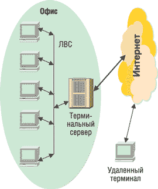
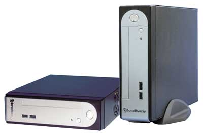
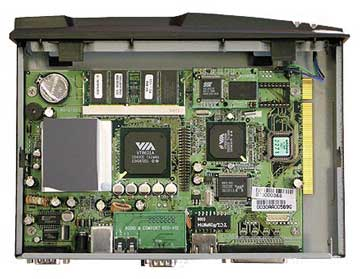
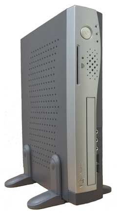
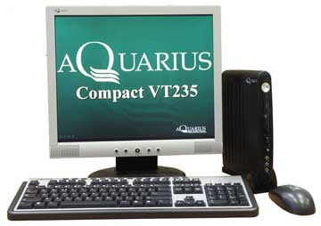
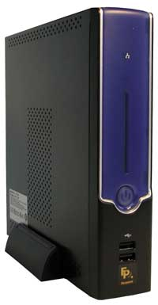
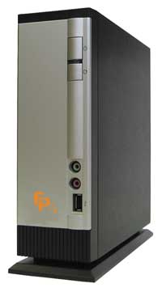

Олег Спиряев
Смещение приоритетов при построении информационных систем в сторону непрерывности работы, безопасности, эргономичности и стоимости означает, что популярность так называемых тонких клиентов может значительно вырасти. Дело в том, что именно такие решения обеспечивают невысокую стоимость владения благодаря низкому энергопотреблению и компактности, а также поддерживают централизованное управление и функции обеспечения непрерывности работы. Немаловажно и то, что в основе концепции тонких клиентов лежит безопасность.
Под терминалом (тонким клиентом) понимают устройство, чья вычислительная мощность и объем памяти определяются задачами пользователя. В сетях тонких клиентов все вычисления выполняются на сервере, что означает возврат к централизации; при этом, разумеется, резко снижаются требования к аппаратуре потребителя (см. рисунок). Приложения и данные, хранящиеся на сервере, становятся доступными для пользователя при включении его устройства и проведении процедуры регистрации на сервере. Любая терминальная система состоит из серверной и клиентской частей. Аппаратная и программная реализации серверной и клиентской части обычно жестко не связаны между собой. Функционирование терминальной системы определяется наличием протокола, задающего среду работы терминальных сессий и некоторый набор функций.
|  | Терминально-серверное решение.
|
Тонкие клиенты обеспечивают производительность, сравнимую с производительностью локальной сети, даже на низкоскоростных линиях. Дело в том, что приложения не перекачиваются по сети и не запускаются на пользовательском компьютере. А обмен данными с сервером о нажатии клавиш, движениях мыши и обновлениях дисплея происходит очень эффективно. В результате администраторы информационных систем могут предоставить пользователям решение, обеспечивающее высокий уровень производительности.
Тонкие клиенты лучше использовать для работы с традиционными офисными приложениями. Их можно легко задействовать и в качестве терминала базового компьютера, что довольно актуально для средних и крупных предприятий. Стоит особо отметить, что в сетях тонких клиентов реализуется необходимый уровень безопасности. При включении устройства на сервере проводятся аутентификация и регистрация абонента. Кроме того, на основе анализа персонального IP-адреса, который играет роль идентификатора пользователя, определяется его принадлежность к той или иной виртуальной сети.
Кроме того, технология тонких клиентов повышает защищенность информации, так как данные не загружаются по сети на пользовательский компьютер. Она также упрощает репликацию данных и обеспечивает всем доступ к одной и той же централизованной информации. Это означает, что затраты на поддержание распределенных баз данных можно сократить, увеличив при этом их надежность.
Достоинства терминальных решенийСнижение совокупной стоимости владения системой (ТСО). Достигается за счет уменьшения времени обслуживания пользовательских рабочих мест, возможности быстрого восстановления вышедшего из строя рабочего места, исключения потерь информации, так как вся она хранится на сервере. Снижение затрат достигается за счет уменьшения расходов, во-первых, на аппаратное обеспечение и, во-вторых, на установку и настройку ПО на каждой рабочей станции. Надежность. Большее время наработки на отказ достигается благодаря отсутствию механических компонентов. Кроме того, сама по себе упрощенная архитектура повышает надежность системы в целом, что немаловажно, учитывая гораздо больший срок эксплуатации терминалов по сравнению с рабочими станциями. Безопасность хранения информации. Выход из строя терминала не влечет за собой потерю информации, так как вся информация хранится на сервере, обычно оборудованном специальным высоконадежным хранилищем данных. Высокий уровень безопасности системы. Отсутствие дисков и дисководов существенно снижает риски утечки информации. Данные по сети не передаются, на клиентские места передается только изображение экрана. Централизованное хранение данных и настроек упрощает процедуры резервного копирования. Не приходится заботиться о сохранности ценных данных и программ на рабочих станциях. Простота администрирования. При использовании тонких клиентов существенно упрощается администрирование всей системы и снижаются расходы на поддержание работы пользователей. К тому же сами пользователи не могут повлиять на стабильность работы ПО на своем рабочем месте. Администрирование терминальной системы полностью централизовано. Поэтому становится проще не только управлять необходимым ПО, но и контролировать пользователей, а также ограничивать использование нежелательных ресурсов. Снижение загрузки сети. Загрузка локальной сети снижается, так как на терминал передаются только состояния экрана, в то время как на ПК поступают значительные объемы данных, загружающие как сеть, так и сам компьютер. В случае нехватки вычислительных ресурсов достаточно провести модернизацию терминального сервера, а не всего парка ПК. Масштабируемость. Чтобы добавить еще одно рабочее место, не требуется устанавливать и настраивать целый компьютер, достаточно просто подключить еще один терминал. Установка и настройка тонкого клиента занимает не более 5 мин. Администратору не придется устанавливать ОС и необходимые программы, поскольку все уже настроено на сервере. Нужно только открыть доступ к необходимым программам и информации. Эргономичность. Как правило, тонкие клиенты либо совсем не имеют вентилятора, либо оснащены одним вентилятором, который практически не создает шума на рабочем месте. Тонкие клиенты неспроста носят такое название: их габариты обычно не превышают размеров большой книги, и они не занимают много места на столе. Экономия электроэнергии. Один терминал может сэкономить до 80% электроэнергии по сравнению с обычным ПК.
|
Эволюция терминальных сервисов
Терминальными сервисами называют программные средства, входящие в состав Microsoft Windows 2000/Windows Server 2003, которые позволяют подключаться к Windows-серверам и выполнять установленные на них программы. При этом в качестве терминальных устройств могут использоваться обычные ПК или специальные терминалы с ограниченной функциональностью, способные лишь подключаться к серверу и отображать посылаемые с сервера экранные формы. При использовании терминальных сервисов обеспечивающий их сервер становится совместно используемым ресурсом, в котором каждый пользователь получает в свое распоряжение часть пространства памяти, защищенную от посторонних воздействий, где он может располагать свои данные и приложения.
Первым этапом на пути к многопользовательскому режиму ОС Windows стал выпуск NT 4.0 Server в редакции Terminal Server Edition (TSE). В своем оригинальном виде - так, как она была реализована в NT 4.0 Server, - поддержка терминальных сервисов обеспечивалась решением MultiWin, лицензированным у компании Citrix (http://www.citrix.com). С тех пор оба партнера, Microsoft и Citrix, развивали технологии терминальных сервисов независимо, используя собственные решения, но родственность между их подходами сохраняется. Реализация терминальных сервисов в современных ОС Windows 2000 и Windows Server 2003 заметно отличается от того, как это было сделано в Windows NT 4.0. Однако следует учитывать, что эти системы не поддерживают 16-разрядные приложения, поэтому в тех случаях, когда есть необходимость в подобного рода приложениях, NT 4.0 остается единственным выбором.
Терминальные сервисы NT 4.0
Модификация в Windows NT 4.0 Server заключалась в интеграции существовавшего ядра с технологией MultiWin, разработанной в компании Citrix. Под интеграцией в данном случае понимается добавление или изменение нескольких компонентов, сервисов и драйверов в ядре NT 4.0. В частности, для обеспечения многопользовательского режима был изменен менеджер виртуальной памяти Virtual Memory Manager (VMM), а также Object Manager (OM).
Для обеспечения мультизадачности в Windows NT 4.0 в основном используются три механизма.
Менеджер виртуальной памяти в TSE служит для решения одной из важнейших задач - отображения виртуальных адресов в адресном пространстве процессов в физические адреса в адресном пространстве физических страниц компьютерной памяти. В Windows NT отведенное процессу адресное пространство поделено на два подпространства размером по 2 Гбайт каждое; одно из них отдано пользователям (область адресов, специфичная для данного процесса), другое - подпространство ядра (область системных адресов). Роль VMM заключается в установлении соответствия между пользовательским адресным подпространством и физической памятью, причем таким образом, чтобы пользовательские подпространства не пересекались, а системные вызовы внутри процессов обращались в область собственной памяти только данного процесса, но не других.
Необходимость в создании специального пространства сеансов (SessionSpace) возникает в связи с тем, что адресное пространство ядра - общее для всех процессов, происходящих в системе. Из-за большого количества процессов есть вероятность одновременного достаточно большого количества обращений по этим адресам, что приведет к неизбежной перегрузке. Такую опасность можно предупредить, выделив в TSE специальное адресное пространство в ядре, которое будет служить своего рода расширением адресного пространства самого ядра. Соответствие между собственной областью ядра и соответствующей ему областью SessionSpace устанавливается на основании индивидуальных идентификаторов процессов. Следует отметить, что каждому процессу в момент входа пользователя в систему присваивается уникальный идентификатор SessionID, который в данном случае и используется для установления соответствия между двумя областями памяти. Кроме того, в Windows NT 4.0 сервер Terminal Server виртуализует все приложения и системные программы с тем, чтобы несколько процессов или пользователей могли обращаться к ним одновременно. Для этой цели также применяются идентификаторы. Для разделения одной копии исполняемого кода между несколькими процессами служит механизм разделения кода (Code Sharing или Copy on-Write Page Protection).
Протокол RDP
Взаимодействие терминальных сервисов Microsoft Terminal Services с клиентами основывается на протоколе Remote Desktop Protocol (RDP), изначально разработанном для Microsoft NetMeeting. Протокол RDP спроектирован для поддержки сетевого протокола TCP/IP в локальных или глобальных сетях. RDP - производное от телекоммуникационного протокола ITU T.120, являющегося стандартом для многоканальных конференций.
Схема проведения сеанса по протоколу RDP упрощенно выглядит так. В процессе загрузки первой загружается системная консоль; ей присваивается SessionID со значением 0. Консольный сеанс запускает системную загрузку, конфигурирующую Windows NT и загружающую драйверы дисплея, клавиатуры и мыши. Затем Terminal Server входит в контакт с менеджером сеансов, тот загружает RDP в пользовательском режиме и создает два незанятых сеанса, которые прослушивают порт 3389 TCP и принимают пакеты.
В RDP пакеты формируются на презентационном уровне модели OSI. Пакеты оформляются и шифруются в соответствии с требованиями сетевых протоколов (в настоящее время RDP поддерживает только TCP/IP). Содержимое передаваемых сообщений состоит из символов, вводимых с клавиатуры, координат перемещения мыши, графических битовых образов и данных, направляемых на принтер. Для того чтобы оптимизировать формируемый трафик, используется целый ряд приемов. К примеру, дисциплина передачи графических образов устроена таким образом, чтобы минимизировать трафик: клиентскому устройству сообщается только то, что нужно перерисовать с момента получения последнего сообщения (иначе говоря, передаются лишь изменения).
RDP-клиент может автоматически резервировать как минимум 1,5 Мбайт памяти для кэширования требуемого текста в виде готового массива глифов. Под глифом понимается графическое представление символа в определенном шрифте, которое ставится в соответствие коду символов. Битовые образы также кэшируются в памяти. При выполнении команды, посланной сервером, клиент может перерисовать изображение на дисплее очень быстро, используя содержимое кэш-памяти.
Для работы с клиентами по низкоскоростным каналам используются методы компрессии, сокращающие размеры пакетов примерно вдвое. В RDP использован эффективный алгоритм кодирования экранных данных, аналогичный используемому в протоколе X Window System. Основная часть наиболее общих и часто повторяющихся элементов графики передается в форме команд, а не в форме битовых образов. Такой подход заметно сокращает объем передаваемых данных.
Терминальные сервисы Windows 2000 Server
В Windows 2000 Terminal Services механизм SessionSpace сохранился, но изменилась карта распределения памяти. Цель этого - сделать Windows 2000 более универсальной, независимой от того, инсталлированы или нет в конкретной информационной системе терминальные сервисы.
Основное изменение коснулось размеров SessionSpace: соответствующая область сокращена до 60 Мбайт и начинается с адреса A0000000. Перемещение SessionSpace по адресу A0000000 позволяет всем системным драйверам, видеодрайверам и драйверам принтеров загружаться в общее виртуальное адресное пространство. Приняв такое решение, в Microsoft избавились от необходимости поддерживать две версии одной и той же ОС - с терминальными сервисами и без.
В Windows 2000 служба Terminal Services ответственна за управление сеансами, инициацию и завершение пользовательских сеансов, за извещения о событиях. Сервисы в измененном сервере Terminal Server теперь не зависят от протокола, можно использовать как RDP-, так и ICA-протокол. Подобная независимость достигается за счет расширения пользовательского режима протокола, обеспечивающего работу сервера Terminal Server. В него вынесена специфичная для определенного протокола функциональность (например, лицензирование, управление сеансами и т. д.). Каждый из протоколов (в данном случае - RDP и ICA) имеет собственное расширение.
Терминальные сервисы Windows 2003 Server
Основной серверной ОС, поддерживающей терминальные сервисы, стала Windows Server 2003. Ее отличает прежде всего новая программа соединения с клиентом. Эта программа впервые появилась в Windows XP и носит название Remote Desktop Connection (RDC); интерфейс ее проще, но эффективнее. RDC можно использовать для подключения настольных компьютеров, работающих под управлением Windows XP Professional, и для подключения к более ранним версиям TSE в составе Windows NT 4.0 и Windows 2000 Server. В RDC используется новая версия протокола RDP и новая модель лицензирования.
Между выпуском Windows 2000 Server и Windows Server 2003 корпорация представила усовершенствованные терминальные сервисы Terminal Services Advanced Client (TSAC). Эти сервисы по-прежнему основаны на функциональных возможностях протокола RDP 5.0, но управление организовано при помощи ActiveX. Производительность TSAC сопоставима с предыдущим клиентом, но развертывание значительно проще. В Windows Server 2003 также появились средства дистанционного управления клиентом (Remote Desktop Client, RDC).
Терминальные решения Kraftway
Ведущий отечественный производитель компьютерного и серверного оборудования корпорация Kraftway (http://www.kraftway.ru) в прошлом году выпустила на рынок реализацию терминального клиента, основанную на новой версии OC Microsoft Windows CE 5.0. Разработка и продвижение серверно-терминальных комплексов, все шире использующихся на российских предприятиях для создания надежно защищенных корпоративных информационных систем, признаны одним из приоритетных направлений работы Центра компетенции компании. Помимо активного применения в бизнесе, такие комплексы с успехом используются при создании учебных классов, расчетно-кассовых центров, в Интернет-кафе - везде, где большое количество пользователей решает задачи, не требующие большой производительности клиентской системы, и заказчики предъявляют повышенные требования к защищенности своих данных. По оценкам зарубежных аналитических агентств, применение терминальных систем снижает ТСО на 5-40%, а эксперты Kraftway считают, что для отечественного рынка и эти цифры далеко не предел.
Отметим, что Kraftway, будучи партнером Microsoft по программе Windows Embedded Partner Program, стала первой российской компанией, представленной в соответствующем каталоге решений Microsoft с собственной версией терминальных станций на основе Windows CE 5.0. Необходимость дополнения существующих решений на базе ПО с открытым кодом собственной версией терминального клиента на базе ПО Microsoft была продиктована запросами корпоративных клиентов, принявших продукты Microsoft в качестве корпоративного стандарта.
В ОС Windows CE 5.0, используемую в моделях терминальных станций Kraftway, включен ряд новых и улучшенных технологий, повышающих производительность и надежность устройств. Среди них:
- новая версия RDP-протокола, повышающая устойчивость и производительность работы с терминальным сервером;
- Microsoft Internet Explorer версии 6.0 для Windows CE 5.0 с поддержкой HTML 4.01, DHTML, CSS1, CSS2 и т. д.;
- расширенные мультимедийные функции - Direct3D Mobile для запуска мультимедийных, игровых и других приложений;
- повышенная безопасность - прогнозирование опасностей, настройки безопасности по умолчанию, поддержка стандарта AES (Advanced Encryption Standard). Включена поддержка SSPI (Kerberos и CryptoAPI);
- поддержка протокола для подключения к терминальному серверу Citrix.
Тонкие клиенты Kraftway на базе Microsoft Windows CE 5.0 имеют ряд существенных преимуществ. Например, поддержка большого количества видеорежимов (разрешение до 1280х1024 с частотой обновления экрана до 85 Гц, глубина цвета - 32 разряда) позволяет подключать практически любые модели мониторов и создавать наиболее комфортные условия для работы пользователя. Все настройки тонкого клиента защищены паролем, доступ к конфигурации имеет только системный администратор. Немаловажно, что встроенную ОС можно безопасно обновлять через локальную сеть или Интернет (через защищенное соединение с FTP-сервером). Кроме того, специалисты Kraftway способны модифицировать ядро тонкого клиента под конкретные требования заказчика, добавить или удалить сервисы, изменить оболочку тонкого клиента, обеспечить поддержку нужных заказчику специализированных устройств.
Статус Citrix Solutions Advisor подтверждает наличие у Kraftway необходимых ресурсов и квалификации для разработки, внедрения и поддержки терминальных решений с использованием продукции Citrix. Терминальные решения с использованием программных продуктов Citrix позволяют обеспечить доступ к корпоративным информационным системам предприятия или организации в любое время, через любое соединение, независимо от местонахождения пользователя и не требуют тиражирования необходимых приложений на рабочие места. Существенная экономия средств при внедрении решений Citrix достигается за счет сокращения расходов на ИТ, в частности, на содержание большого штата ИТ-специалистов, а также регулярную модернизацию парка ПК. Кроме того, решения Citrix по организации удаленного доступа упрощают администрирование корпоративных приложений и позволяют более оперативно перейти на использование нового ПО, а также выстроить эффективную систему технической поддержки.
Клиентские терминальные станции Kraftway с поддержкой сервисов Citrix представлены двумя программными платформами: Kraftway Terminal Linux и ядро на базе WinCE 5.0, а также терминалами Kraftway Credo VV20 и Credo VV21. При разработке инфраструктуры терминального доступа специалисты Kraftway стремятся к снижению общей стоимости владения ИТ-инфраструктурой, обеспечению эффективной работы пользователей, безопасности и надежности.
Решения Kraftway на базе Citrix Systems представляют интерес для территориально распределенных компаний и организаций со сложной инфраструктурой приложений и гетерогенной сетью - банков, страховых и телекоммуникационных компаний, крупных промышленных холдингов, институтов государственной власти. На сегодняшний день программный пакет Citrix Access Suite - самая распространенная в мире система для организации безопасного, легкоуправляемого доступа к корпоративным приложениям и данным "по запросу" с единой точкой входа, эффективно решающая вопрос о защите данных при удаленном доступе.
Объявив 2005 г. годом создания инфраструктурных решений, Kraftway построила свою стратегию на активном использовании в качестве операционной среды ПО с открытым кодом. Для этого компания как заключает OEM-соглашения с ведущими мировыми разработчиками, так и самостоятельно выпускает свои версии Linux. Возможности Kraftway в области создания надежных бизнес-решений на базе OC Linux продемонстрировал, в частности, программно-аппаратный grid-комплекс.
Как известно, центральная идея grid-решения состоит в динамической балансировке нагрузки и динамическом перераспределении ресурсов на всех уровнях КИС (серверы, хранилища данных, СУБД, приложения), а в качестве основы для построения системы используются фермы недорогих серийных серверов стандартной архитектуры. Представленное решение было построено на объединенных в кластер с помощью магистрали InfiniBand четырех двухпроцессорных серверах Kraftway G-Scale ET20 на базе Intel Itanium 2, которые обеспечивают максимальный уровень производительности и адресацию больших объемов оперативной памяти.
В качестве ОС для построения grid-решения Kraftway использует платформу Red Hat Enterprise Linux. Реализация grid-модели, предлагаемая Kraftway, ориентирована на создание корпоративных информационных систем на базе семейства продуктов Oracle 10g. Активно занимаясь продвижением идеологии grid, Kraftway акцентирует внимание заказчиков на таких преимуществах решения, как:
- снижение затрат на создание высокопроизводительных комплексов за счет использования недорогих стандартных компонентов;
- эффективное использование вычислительных ресурсов предприятия за счет динамического перераспределения нагрузки;
- дополнительную надежность системы благодаря независимости работы приложений от конкретных аппаратных элементов grid за счет их виртуализации и консолидации вычислительных ресурсов;
- простоту модернизации по мере роста компании.
Использование Red Hat Linux в качестве операционной системы только увеличивает привлекательность grid-решения для заказчиков. Для оборудования клиентских мест на предприятиях и в организациях, ставящих во главу угла защищенность своих корпоративных данных, надежность, простоту администрирования и низкую стоимость владения, Kraftway предлагает терминальные станции Kraftway Credo, которые, дополняя представленный grid-комплекс, позволяют продемонстрировать законченное бизнес-решение уровня предприятия.
|  | Терминалы Kraftway Credo.
|
В качестве встроенной ОС для своих терминальных станций Kraftway использует ОС Linux собственной разработки - Kraftway Terminal Linux. Преимущества такого подхода - не только в минимальных затратах на лицензирование ПО, но и в более широких возможностях и гибкости при адаптации под требования заказчиков по сравнению с конкурирующими OC. В состав ПО терминальных станций Kraftway входит административная утилита для конфигурирования системы с простым и интуитивно понятным графическим интерфейсом на русском языке. Kraftway Terminal Linux также обеспечивает парольную защиту конфигураций. Терминалы Kraftway поддерживают основные сетевые протоколы и могут функционировать как клиенты Windows Terminal Server, Citrix или Unix-серверов.
ПО терминалов Kraftway поддерживает сетевые и локальные принтеры. При использовании локального принтера порт ввода-вывода перенаправляется на сервер в рамках сессии пользователя. При этом локальный принтер может быть настроен либо на эксклюзивное использование только с того терминала, к которому он подключен, либо и в качестве обычного разделяемого сетевого принтера. Перенаправление порта ввода-вывода обеспечивается при подключении к обоим типам серверов: Windows Terminal Service и Citrix.
Терминалы Kraftway Credo VV20 и VV21 основаны на процессорах VIA Eden, работающих на тактовых частотах 1 ГГц, и наборах микросхем VIA CLE266. Объем оперативной памяти DDR PC266 в базовой комплектации составляет 128 Мбайт и может расширяться до 1 Гбайт. Размеры корпуса - 65х210х275 мм. В варианте VV20 имеются два отсека: с внешним доступом, с форм-фактором 5,25 дюйма, и с внутренним - с форм-фактором 3,5 дюйма, например, для установки жесткого диска емкостью от 40 Гбайт. В модификации VV21 имеется только отсек с внешним доступом.
|  | Терминал на базе НМС VIA.
|
Тонкие клиенты Kraftway Credo поддерживают перенаправление звука, 16-разрядную цветовую схему, работу внешних накопителей и устройств ввода с интерфейсом USB. Реализована возможность автоматического подключения к терминальному серверу при включении клиента. Помимо функционирования совместно с терминальным сервером, тонкие клиенты Kraftway могут исполнять роль автономного Web-браузера, поддерживающего русскоязычные кодировки и элементы страниц, созданные с помощью технологии Macromedia Flash. Обновление встроенного ПО терминальных станций Kraftway осуществляется через локальную сеть или с USB-накопителя.
Тонкие клиенты "Аквариус"
Компания "Аквариус" (http://www.aq.ru) начала выпуск тонких клиентов еще в марте 2004 г. Данное решение в первую очередь было рассчитано на предприятия и организации с ограниченными финансовыми ресурсами, поскольку позволяло оптимизировать затраты на приобретение компьютерной техники и ее дальнейшую эксплуатацию. Максимальную выгоду получали предприятия-заказчики, использующие решения на основе терминальных серверов, где требовался высокий уровень безопасности при минимальных совокупной стоимости владения и размере терминала.
В конце мая прошлого года компания "Аквариус" объявила о расширении продуктового ряда тонких клиентов и начале продаж нового решения - Aquarius VT230. Устройство имеет компактный корпус форм-фактора microITX (53 мм высотой в горизонтальном положении) массой всего 2,5 кг (без платы расширения) со встроенным блоком питания мощностью 42 Вт, автоматически подстраивающимся под входное напряжение сети. При необходимости VT230 устанавливается вертикально с помощью специального стенда, который входит в комплект поставки.
|  | Терминал Aquarius VT230.
|
Как уже отмечалось, специфика работы тонкого клиента не требует высокопроизводительного дорогостоящего процессора, так как вся работа выполняется на сервере, а терминал - тонкий клиент - используется только для ввода и отображения информации. Поэтому VT230 комплектуется центральным процессором VIA Eden с тактовой частотой до 1 ГГц и малым энергопотреблением (7 Вт), а набор микросхем VIA Twister обеспечивает терминалу оптимальную производительность и функциональность. Встроенный графический контроллер S3 Graphics Savage 4 (AGP 4x) обеспечивает разрешение до 1600х1200 при 32-разрядной глубине цвета. Терминал оборудован флэш-диском емкостью 32 Мбайт, имеет встроенную сетевую карту Fast Ethernet и поддерживает технологию загрузки с сервера. VT230 оборудован четырьмя портами USB (два из них выведены на переднюю панель), двумя последовательными портами RS-232C, параллельным портом с поддержкой EPP/ECP, на переднюю панель выведены три гнезда аудиоподсистемы: линейный вход, линейный стереовыход и гнездо для мономикрофона.
Решения на базе этого устройства предназначены для сегментов среднего и малого бизнеса, продвижение в который для компании в данный момент приоритетно. Этот рынок особенно чувствителен к начальной цене решения, поэтому предназначенные для него тонкие клиенты оснащаются мини-ОС aQuaNix, разработанной инженерами "Аквариус". Эта ОС использует протокол Citrix ICA или Microsoft RDP и основана на открытых кодах, что снижает стоимость решения, обеспечив при этом необходимую функциональность. Дополнительным преимуществом служит бесплатная техническая поддержка каждой копии aQuaNix, обеспечиваемая специалистами "Аквариус" в течение года с момента ее приобретения.
Для небольших компаний, подчас не имеющих собственного ИТ-отдела, важна также простота развертывания и настройки сети терминальных устройств. Специально ради максимального удобства установки в "Аквариус" разработали детальную пошаговую инструкцию, которая поставляется в комплекте с оборудованием и позволяет легко развернуть и настроить сеть не только системному администратору, но даже не слишком подготовленному пользователю.
Для сегмента корпоративных пользователей основными критериями выбора терминальных решений остаются защищенность данных, управляемость и расширяемость сети. Таким заказчикам "Аквариус" предлагает программно-аппаратные комплексы на основе более производительных терминальных устройств Aquarius VT235. Особенность нового решения заключается в том, что устройство оборудовано внешним блоком питания, что позволило уменьшить габариты тонкого клиента и сделать его действительно тонким - толщиной всего в 37 мм. Блок питания мощностью 36 Вт автоматически подстраивается под входное напряжение сети. Aquarius VT235 можно устанавливать вертикально с помощью специального стенда, входящего в комплект поставки, или закреплять на стене (мониторе). Масса Aquarius VT235 без блока питания составляет всего 800 г. Терминал оборудован картой Compact Flash емкостью 128 Мбайт, имеет встроенную сетевую карту Fast Ethernet и поддерживает технологию загрузки с сервера. Под заказ тонкий клиент VT235 может поставляться с устройством чтения смарт-карт.
|  | Терминал Aquarius VT235.
|
В качестве программной части решения для корпоративных заказчиков предлагаются встроенные ОС Microsoft Windows CE и Windows XP. В сентябре 2005 г. компания "Аквариус" получила официальный статус Microsoft Windows Embedded Partner, дающий возможность поставлять технику со встроенными ОС Microsoft, которые обеспечивают большую функциональность сети терминальных станций. Встроенные ОС Microsoft, помимо полного набора функций ОС, включают в себя все средства, необходимые для создания, отладки и тиражирования интеллектуальных, легко подключаемых терминальных устройств, а также предоставляют ряд дополнительных возможностей. К ним относятся: поддержка множества видеорежимов, что позволяет подключать практически любые модели мониторов; возможность защиты паролем всех настроек тонкого клиента; безопасное обновление ОС через локальную сеть или через Интернет посредством защищенного соединения с FTP-сервером.
Специально для корпоративных клиентов, использующих ERP-системы, компания "Систематика", входящая вместе с "Аквариус" в Национальную компьютерную корпорацию, разработала программно-технический комплекс "Аквалис" - решение, обеспечивающее высокий уровень защиты клиентского доступа к SAP R/3. "Аквалис" построен на базе терминальных устройств Аquarius и включает в себя клиентские модули SAP GUI, LISSI-SNС, "Крипто-Про", модуль поддержки смарт-карт и электронных ключей. Особенность ПТК "Аквалис" состоит в сочетании преимуществ бездискового терминального устройства с полной функциональностью клиентских модулей. Такой комплекс - оптимальное решение для компаний с высокими требованиями к защите информации, прежде всего для предприятий с гетерогенными территориально распределенными информационными системами, включающими в себя открытые незащищенные сегменты компьютерных сетей и каналов передачи данных, которые могут находиться вне зоны контроля предприятия.
На тонкие клиенты Aquarius VT230 и VT235 компания предоставляет трехлетнюю гарантию. Заказчики также могут воспользоваться пакетами расширенного сервиса SERViceAQ.
Решения Flex Engineering
Основное направление работы компании Flex Engineering (http://www.flexen.ru; http://www.farpoint.ru) связано с поставкой оборудования для создания функционально-ориентированных рабочих мест и встроенных терминалов. Продукция Flex Engineering широко используется на автоматизированных рабочих местах в корпоративных информационных системах, в вертикальных приложениях и в системах промышленной автоматизации. Flex Engineering - партнер ведущих мировых производителей программно-аппаратного обеспечения: Microsoft, Citrix, ThinPrint GmbH, ASUSTeK, VIA Technologies и т. д. В частности, Flex Engineering выпускает полную линейку терминальных решений на основе ОС Windows CE и Windows XP Embedded.
Бесшумные, экологичные и эргономичные микрокомпьютеры FarPoint, не содержащие устройств с низкой надежностью, не требуют технического обслуживания в течение всего жизненного цикла.
Одна из базовых моделей компании - терминал FarPoint M2, основная привлекательность которого заключается в невысокой цене. Устройство основано на процессоре VIA С3 с тактовой частотой 533 МГц, который не требует принудительного охлаждения. Увеличенные габариты корпуса (63х294х275 мм) позволяют наращивать возможности терминала за счет дополнительных устройств, в том числе и дисковых приводов. Благодаря наличию PCI-слота можно устанавливать дополнительные контроллеры с интерфейсом USB 2.0. В данной модели используется оперативная память SDRAM объемом 64 Мбайт и графический адаптер со встроенной 8-Mбайт видеопамятью.
Терминалы FarPoint MV21, в отличие от других устройств в линейке FarPoint, построены на базе процессора VIA Samuel II и набора микросхем CLE266. Процессор VIA Samuel II отличается чрезвычайно низким потреблением энергии и возможностью динамического управления тактовой частотой и энергопотреблением в зависимости от реальной нагрузки. Кроме того, процессор совместим с технологией VIA PowerSaver 3. Новые терминалы практически бесшумны, а низкое тепловыделение, энергопотребление и высокая надежность позволяют применять их в критически важных системах, работающих в непрерывном режиме (24 часа в сутки, 7 дней в неделю, 365 дней в году). Поскольку терминалы построены на базе НМС CLE266, в них используется память DDR и высокоскоростной интерфейс подключения внешних устройств USB 2.0.
|  | Терминал FarPoint MV21.
|
В зависимости от предполагаемого использования на терминалы FarPoint MV21 предустанавливаются одна из ОС - Windows CE.NET, Linux или Windows XP Embedded и терминальное ПО (Microsoft или Citrix). В такой конфигурации эти устройства могут использоваться в качестве универсальных терминалов, позволяющих работать практически с любыми офисными и корпоративными приложениями. На базе FarPoint MV21 можно также создавать специализированные пользовательские устройства. В этом случае, наряду с системным ПО, в энергонезависимую память устройства заносится тот или иной набор прикладных программ.
Новый терминал FarPoint M22, поставки которого начнутся в марте, выполнен в небольшом элегантном корпусе, размеры которого по сравнению с базовой моделью уменьшены на 20%. Здесь используется более экономичная модификация процессора VIA C3 с уменьшенным (с 1,4 до 1,07 В) напряжением питания ядра. А тактовая частота процессора, наоборот, увеличена, с 533 до 667 МГц, при этом она может меняться в зависимости от нагрузки. Новый НМС позволяет работать уже не с SDRAM, а с более быстрой DDR-памятью, а также с высокоскоростным интерфейсом USB 2.0. Конструкция корпуса и системной платы допускает установку низкопрофильной PCI-карты без дополнительной платы расширения. Вместе с терминалами FarPoint M22 поставляется новая версия ОС Windows CE.NET 5.0 и терминальное ПО Microsoft или Citrix.
|  | Терминал FarPoint M22.
|
Другая базовая модель - терминал FarPoint M3, выполненный в миниатюрном корпусе черного цвета (223х44х168 мм). Он базируется на процессоре VIA С3 с тактовой частотой 533 МГц; объем оперативной памяти составляет 64 Мбайт. Для повышения безопасности доступа к терминалу можно использовать внешнее устройство считывания смарт-карт.
На основе модели M3 построен терминал FarPoint M3-WLAN с дополнительной беспроводной Ethernet-картой. Таким образом, возможности данного терминала позволяют работать как по проводной (802.2), так и по беспроводной сети (802.11). Для подключения внешнего оборудования предназначен PCMCIA-адаптер с доступом на задней панели. Оперативная память может расширяться с 64 до 512 Мбайт. Размеры устройства составляют 223х44х168 мм.
Терминал FarPoint LCD-All-In-One позволяет сократить расходы на эксплуатацию информационной системы, максимально увеличить ее надежность и обеспечить оптимальные условия для перехода на терминальные технологии. Конструктивная особенность терминала - интеграция в одном корпусе ЖК-видеомонитора и всех электронных компонентов. Терминал имеет сменную карту для подключения по проводной либо по беспроводной сети (802.11b). FarPoint LCD-All-In-One со встроенными RDP- и ICA-клиентами представляет собой универсальную интегрированную систему для мобильных пользователей, перемещающихся вместе с терминалом по зданию. Данный терминал - первый в серии тонкий клиент, содержащий в одном корпусе дисплей и одноплатный компьютер, который использует одно напряжение питания (12 В). Поскольку устройство не содержит высоковольтных цепей, то может применяться в условиях с повышенными требованиями к искро- и взрывобезопасности.
ЖК-дисплей с диагональю экрана 15 дюймов обеспечивает высокую контрастность изображения - 300:1. Дополнительные преимущества дают встроенный считыватель смарт-карт и PCMCIA-адаптер. Объем оперативной памяти составляет 64 Мбайт. Размеры устройства - 300х364х65 мм.
Специалисты Flex Engineering разработали ПО удаленного администрирования RADM - удобное и эффективное средство администрирования сетей, созданных с использованием технологии тонких клиентов. Оно предназначено для всех терминалов семейства FarPoint, работающих с ОС Windows CE, и состоит из двух частей: резидентной (встроенной в терминал) и административной (работающей на управляющем компьютере, сервере).
Базовые функции ПО RADM позволяют:
- проводить поиск включенных в сеть удаленных терминалов и их последующее присоединение;
- получать информацию о текущей конфигурации конкретного терминала и отображать ее в программе управления;
- выполнять перезапуск или выключение удаленного терминала;
- включать ранее выключенный терминал, выбранный по его идентификационному номеру (МАС-адресу).
Кроме того, можно изменить общие настройки терминала на предустановленные, заводские (это может потребоваться, например, при неправильном выборе разрешения экрана монитора). Расширенные функции ПО RADM обеспечивают перезапись встроенного ПО терминала (обновление образа), а также, что особенно важно, - создание нового, удаление или изменение существующего соединения (сессии) при использовании RDP- или ICA-протоколов.
ОС Windows XP Embedded превращает терминал FarPoint во вполне самостоятельный микрокомпьютер уровня бездисковой рабочей станции. Несмотря на коммерческое настольное пользовательское исполнение, конструкция терминалов FarPoint сочетает в себе лучшие технологические разработки индустрии промышленных встраиваемых систем: компактность, экономичность, многолетний безотказный ресурс без ущерба производительности. Так, ПО терминала FarPoint Pro построено на базе встраиваемой ОС Windows XP Embedded SP2. Это устройство со встроенными RDP- и ICA-клиентами оптимально для пользователей, которые хотят получить преимущества Microsoft Windows Terminal Server или Citrix MetaFrame Presentation Server, а также воспользоваться дополнительными внешними устройствами, требующими установки локальных драйверов.